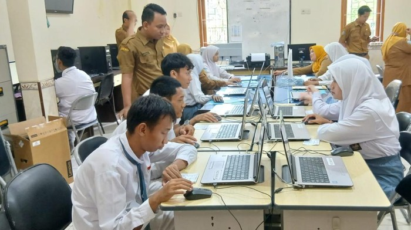

Upgrade your life in silence.
Menteri Pendidikan Dasar dan Menengah (Mendikdasmen) Abdul Mu'ti mengimbau orang tua agar tidak memaksakan anak ikut bimbingan belajar (bimbel) tambahan untuk persiapan menghadapi Tes Kemampuan Akademik (TKA). Bimbel dikhawatirkan bisa menambah beban pikiran siswa.

Dibandingkan bimbel, Mu'ti mengatakan, orang tua lebih perlu mendorong semangat belajar dengan memberikan motivasi. Masyarakat menurutnya tidak perlu cemas anak akan tertinggal secara akademis.
Menurut Mu'ti, materi yang diajarkan di sekolah pada dasarnya sudah cukup. Ia juga mengimbau agar instansi pendidikan terus meningkatkan mutu pengajaran sebagai langkah pendukung.
"Sekolah hendaknya memberikan layanan pendidikan yang terbaik sehingga para murid memiliki bekal yang cukup untuk dapat melanjutkan studi ke jenjang pendidikan yang lebih tinggi," tuturnya dari keterangan tertulis yang diterima detikEdu, Rabu (9/9/2026).